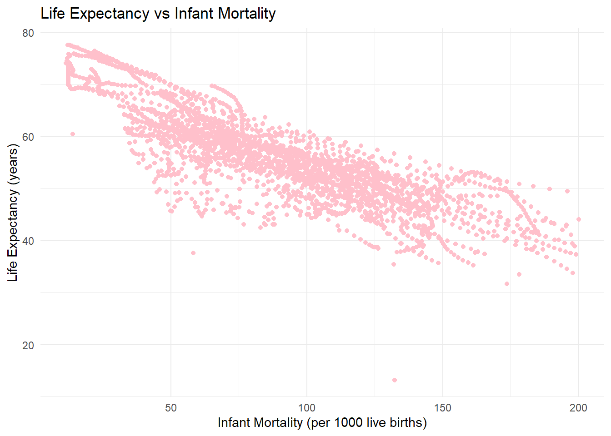
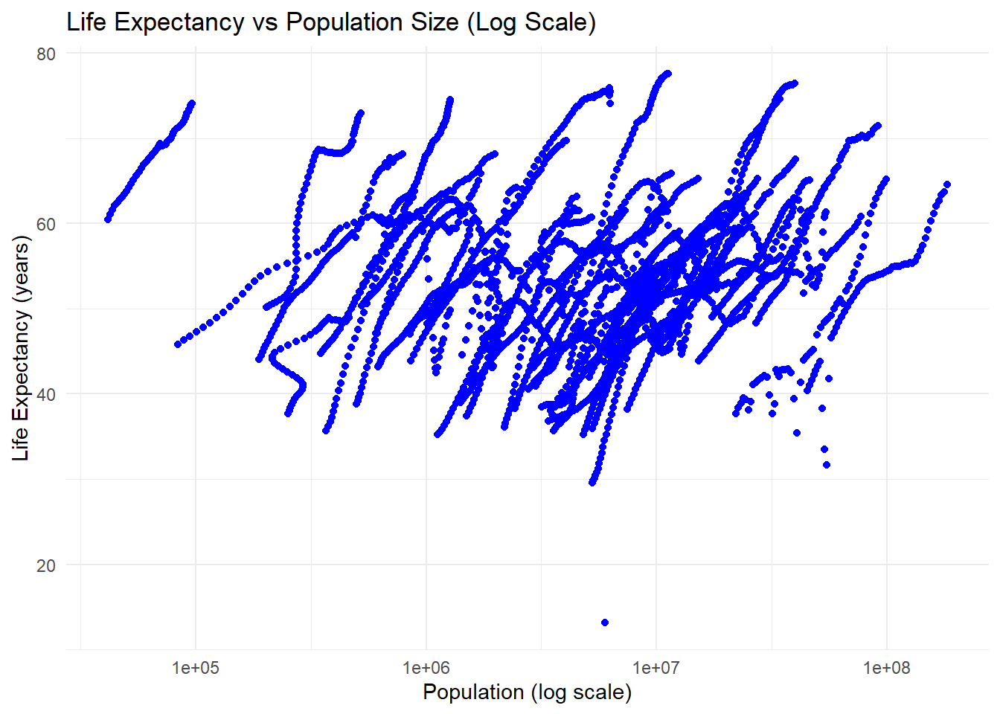
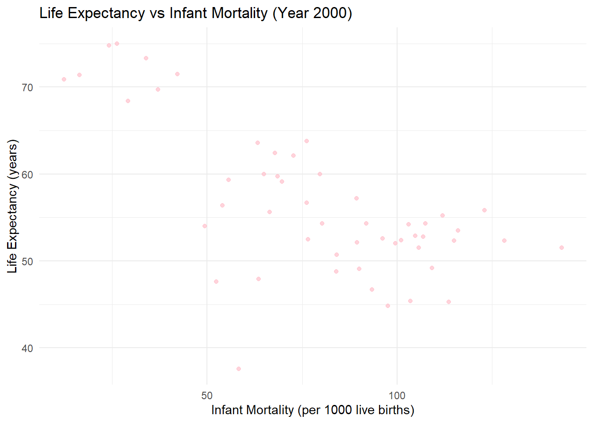
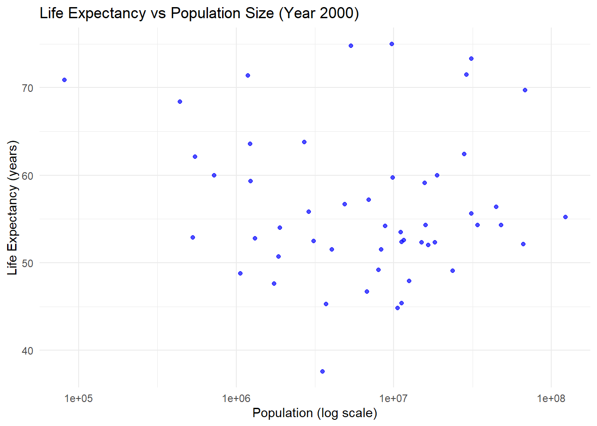
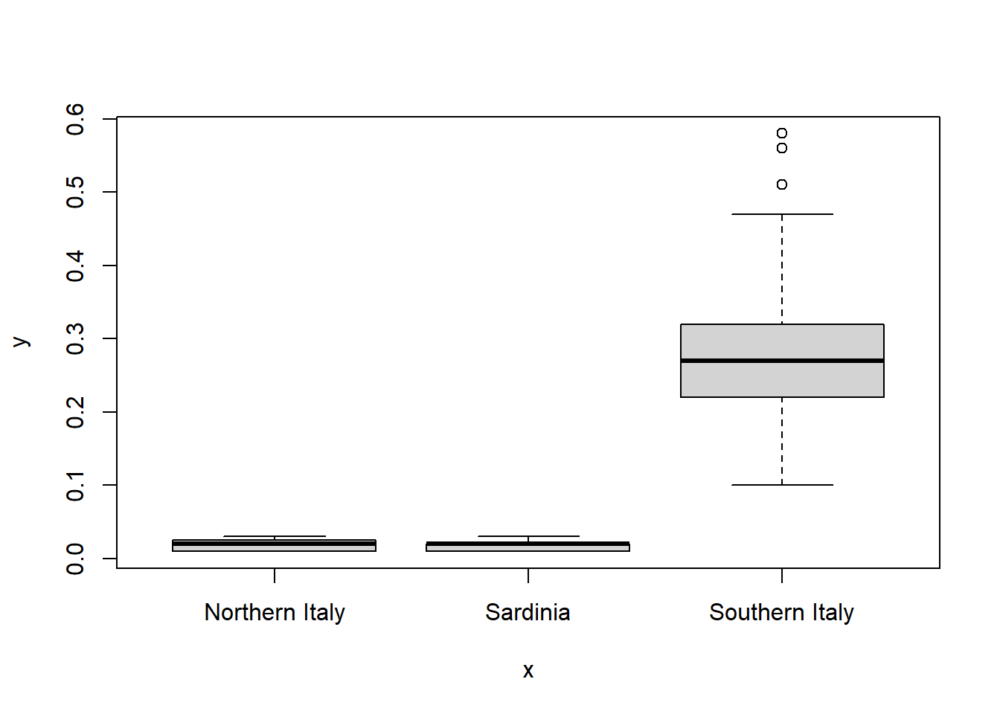
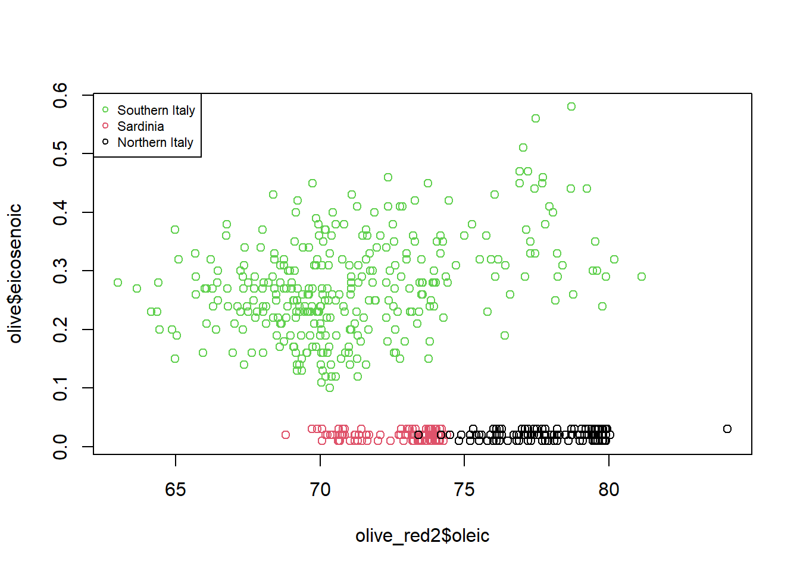

# Installing the dslabs package because I did not have it in my library
# MJ: code isn't rendering with this line so I made it a comment
#install.packages("dslabs")Module3_MADA
# Loading the dslabs package
library(dslabs)Warning: package 'dslabs' was built under R version 4.4.2# Using the help function page to assist in obtaining the gapminder dataset from the dslabs package
help("gapminder")starting httpd help server ... done# loading the dslabs package and gapminder dataset
library(dslabs)
data("gapminder")
# Using the str() to view the structure of the dataset
str(gapminder)'data.frame': 10545 obs. of 9 variables:
$ country : Factor w/ 185 levels "Albania","Algeria",..: 1 2 3 4 5 6 7 8 9 10 ...
$ year : int 1960 1960 1960 1960 1960 1960 1960 1960 1960 1960 ...
$ infant_mortality: num 115.4 148.2 208 NA 59.9 ...
$ life_expectancy : num 62.9 47.5 36 63 65.4 ...
$ fertility : num 6.19 7.65 7.32 4.43 3.11 4.55 4.82 3.45 2.7 5.57 ...
$ population : num 1636054 11124892 5270844 54681 20619075 ...
$ gdp : num NA 1.38e+10 NA NA 1.08e+11 ...
$ continent : Factor w/ 5 levels "Africa","Americas",..: 4 1 1 2 2 3 2 5 4 3 ...
$ region : Factor w/ 22 levels "Australia and New Zealand",..: 19 11 10 2 15 21 2 1 22 21 ...# Using the summary() to obtain a statistical summary of the dataset
summary(gapminder) country year infant_mortality life_expectancy
Albania : 57 Min. :1960 Min. : 1.50 Min. :13.20
Algeria : 57 1st Qu.:1974 1st Qu.: 16.00 1st Qu.:57.50
Angola : 57 Median :1988 Median : 41.50 Median :67.54
Antigua and Barbuda: 57 Mean :1988 Mean : 55.31 Mean :64.81
Argentina : 57 3rd Qu.:2002 3rd Qu.: 85.10 3rd Qu.:73.00
Armenia : 57 Max. :2016 Max. :276.90 Max. :83.90
(Other) :10203 NA's :1453
fertility population gdp continent
Min. :0.840 Min. :3.124e+04 Min. :4.040e+07 Africa :2907
1st Qu.:2.200 1st Qu.:1.333e+06 1st Qu.:1.846e+09 Americas:2052
Median :3.750 Median :5.009e+06 Median :7.794e+09 Asia :2679
Mean :4.084 Mean :2.701e+07 Mean :1.480e+11 Europe :2223
3rd Qu.:6.000 3rd Qu.:1.523e+07 3rd Qu.:5.540e+10 Oceania : 684
Max. :9.220 Max. :1.376e+09 Max. :1.174e+13
NA's :187 NA's :185 NA's :2972
region
Western Asia :1026
Eastern Africa : 912
Western Africa : 912
Caribbean : 741
South America : 684
Southern Europe: 684
(Other) :5586 # Using the class() to check the type of object gapminder is consist of
class(gapminder)[1] "data.frame"#ading the dplyr package into R session so i can make its functions available. This package ispart of the tidyverse and is specifically designed for data manipulation and transformation, which will assist in providing fuctions to better work with data frames.
library(dplyr)
Attaching package: 'dplyr'The following objects are masked from 'package:stats':
filter, lagThe following objects are masked from 'package:base':
intersect, setdiff, setequal, union## in the code below we are exploring some of the categories the of African Data from the gapminder dataset located in the dslabs package in Rstudio
#I started by creating two new objects from the `africadata` dataset:
#- **`InfantLife`**: This object contains only the columns `infant_mortality` and `life_expectancy`.
#- **`PoppLife`**: This object contains only the columns `population` and `life_expectancy`.
#I use the `str()` function to examine the structure of each object and the `summary()` function to get descriptive statistics.
### Code and Results# We want to Filter only African countries and assign to a new object new object/variable called africadata. So this code is doing that task.
africadata <- gapminder %>%
filter(continent == "Africa")
# We want to View the structure of the africadata object. The str() command is doing that task.
str(africadata)'data.frame': 2907 obs. of 9 variables:
$ country : Factor w/ 185 levels "Albania","Algeria",..: 2 3 18 22 26 27 29 31 32 33 ...
$ year : int 1960 1960 1960 1960 1960 1960 1960 1960 1960 1960 ...
$ infant_mortality: num 148 208 187 116 161 ...
$ life_expectancy : num 47.5 36 38.3 50.3 35.2 ...
$ fertility : num 7.65 7.32 6.28 6.62 6.29 6.95 5.65 6.89 5.84 6.25 ...
$ population : num 11124892 5270844 2431620 524029 4829291 ...
$ gdp : num 1.38e+10 NA 6.22e+08 1.24e+08 5.97e+08 ...
$ continent : Factor w/ 5 levels "Africa","Americas",..: 1 1 1 1 1 1 1 1 1 1 ...
$ region : Factor w/ 22 levels "Australia and New Zealand",..: 11 10 20 17 20 5 10 20 10 10 ...# Here we are abtaining a summary of the africadata object.
summary(africadata) country year infant_mortality life_expectancy
Algeria : 57 Min. :1960 Min. : 11.40 Min. :13.20
Angola : 57 1st Qu.:1974 1st Qu.: 62.20 1st Qu.:48.23
Benin : 57 Median :1988 Median : 93.40 Median :53.98
Botswana : 57 Mean :1988 Mean : 95.12 Mean :54.38
Burkina Faso: 57 3rd Qu.:2002 3rd Qu.:124.70 3rd Qu.:60.10
Burundi : 57 Max. :2016 Max. :237.40 Max. :77.60
(Other) :2565 NA's :226
fertility population gdp continent
Min. :1.500 Min. : 41538 Min. :4.659e+07 Africa :2907
1st Qu.:5.160 1st Qu.: 1605232 1st Qu.:8.373e+08 Americas: 0
Median :6.160 Median : 5570982 Median :2.448e+09 Asia : 0
Mean :5.851 Mean : 12235961 Mean :9.346e+09 Europe : 0
3rd Qu.:6.860 3rd Qu.: 13888152 3rd Qu.:6.552e+09 Oceania : 0
Max. :8.450 Max. :182201962 Max. :1.935e+11
NA's :51 NA's :51 NA's :637
region
Eastern Africa :912
Western Africa :912
Middle Africa :456
Northern Africa :342
Southern Africa :285
Australia and New Zealand: 0
(Other) : 0 # using the Africadata object containing only infant_mortality and life_expectancy, I am creating two new object called InfantLife
InfantLife <- africadata %>%
select(infant_mortality, life_expectancy)
#using the Africadata object containing only population, life_expectancy, I am creating two new object called PoppLife Create
PoppLife <- africadata %>%
select(population, life_expectancy)
# Verifying the first few rows of both objects to verify
head(InfantLife) infant_mortality life_expectancy
1 148.2 47.50
2 208.0 35.98
3 186.9 38.29
4 115.5 50.34
5 161.3 35.21
6 145.1 40.58head(PoppLife) population life_expectancy
1 11124892 47.50
2 5270844 35.98
3 2431620 38.29
4 524029 50.34
5 4829291 35.21
6 2786740 40.58# I want to View the structure of the InfantLife and PoppLife to ensure the number of rows and columns . The str() command is doing that task.
str(InfantLife)'data.frame': 2907 obs. of 2 variables:
$ infant_mortality: num 148 208 187 116 161 ...
$ life_expectancy : num 47.5 36 38.3 50.3 35.2 ...str(PoppLife)'data.frame': 2907 obs. of 2 variables:
$ population : num 11124892 5270844 2431620 524029 4829291 ...
$ life_expectancy: num 47.5 36 38.3 50.3 35.2 ...# Using the summary() function to obtain a statistical summary of the InfantLife object. the summary will give a detailed idea of (min, median, max, etc.)
summary(InfantLife) infant_mortality life_expectancy
Min. : 11.40 Min. :13.20
1st Qu.: 62.20 1st Qu.:48.23
Median : 93.40 Median :53.98
Mean : 95.12 Mean :54.38
3rd Qu.:124.70 3rd Qu.:60.10
Max. :237.40 Max. :77.60
NA's :226 # Using the summary() function to obtain a statistical summary of the PoppLife objec. the summary will give a detailed idea of (min, median, max, etc).
summary(PoppLife) population life_expectancy
Min. : 41538 Min. :13.20
1st Qu.: 1605232 1st Qu.:48.23
Median : 5570982 Median :53.98
Mean : 12235961 Mean :54.38
3rd Qu.: 13888152 3rd Qu.:60.10
Max. :182201962 Max. :77.60
NA's :51 # I originally ran the code for the plot and I received theses error msg:Warning: Removed 226 rows containing missing values or values outside the scale range (geom_point()).Warning: Removed 51 rows containing missing values or values outside the scale range (geom_point()). so in order revolve the missing rows/values outside of the plot so took those measures - codes below->
# First I Checked for missing values in the infant_mortality and life_expectancy columns
sum(is.na(InfantLife$infant_mortality)) # Count missing values in infant_mortality[1] 226sum(is.na(InfantLife$life_expectancy)) # Count missing values in life_expectancy[1] 0# Second I Checked for missing values in the population and life_expectancy columns
sum(is.na(PoppLife$population)) # Count missing values in population[1] 51sum(is.na(PoppLife$life_expectancy)) # Count missing values in life_expectancy[1] 0# Third I removed the rows with missing values in InfantLife
InfantLife <- na.omit(InfantLife)
# Remove rows with missing values in PoppLife
PoppLife <- na.omit(PoppLife)
# I then verified the range of infant_mortality and life_expectancy
range(InfantLife$infant_mortality, na.rm = TRUE)[1] 11.4 237.4range(InfantLife$life_expectancy, na.rm = TRUE)[1] 13.2 77.6# I also verified the range of population and life_expectancy
range(PoppLife$population, na.rm = TRUE)[1] 41538 182201962range(PoppLife$life_expectancy, na.rm = TRUE)[1] 13.2 77.6# I Filtered out extreme values for better visualization
InfantLife <- InfantLife %>%
filter(infant_mortality <= 200) # Example: Focus on infant mortality ≤ 200
PoppLife <- PoppLife %>%
filter(population > 0) # Ensure population is positive# Load necessary libraries
library(ggplot2)
library(dplyr)
# Remove missing values from datasets
InfantLife <- na.omit(InfantLife)
PoppLife <- na.omit(PoppLife)
# Plot 1: Life expectancy as a function of infant mortality
ggplot(InfantLife, aes(x = infant_mortality, y = life_expectancy)) +
geom_point(color = "pink") + # Plot points
labs(
title = "Life Expectancy vs Infant Mortality",
x = "Infant Mortality (per 1000 live births)",
y = "Life Expectancy (years)"
) +
theme_minimal()
# Plot 2: Life expectancy as a function of population size (log scale for x-axis)
ggplot(PoppLife, aes(x = population, y = life_expectancy)) +
geom_point(color = "blue") + # Plot points
scale_x_log10() + # Set the x-axis to a log scale
labs(
title = "Life Expectancy vs Population Size (Log Scale)",
x = "Population (log scale)",
y = "Life Expectancy (years)"
) +
theme_minimal()
# Taking a look at a sample of the africadata dataset
head(africadata) country year infant_mortality life_expectancy fertility population
1 Algeria 1960 148.2 47.50 7.65 11124892
2 Angola 1960 208.0 35.98 7.32 5270844
3 Benin 1960 186.9 38.29 6.28 2431620
4 Botswana 1960 115.5 50.34 6.62 524029
5 Burkina Faso 1960 161.3 35.21 6.29 4829291
6 Burundi 1960 145.1 40.58 6.95 2786740
gdp continent region
1 13828152297 Africa Northern Africa
2 NA Africa Middle Africa
3 621797131 Africa Western Africa
4 124460933 Africa Southern Africa
5 596612183 Africa Western Africa
6 341126765 Africa Eastern Africa# Checking data for a specific country (Nigeria)
africadata %>%
filter(country == "Nigeria") %>%
select(country, year, infant_mortality, life_expectancy, population) country year infant_mortality life_expectancy population
1 Nigeria 1960 165.0 40.39 45211614
2 Nigeria 1961 NA 41.00 46144154
3 Nigeria 1962 182.6 41.61 47117859
4 Nigeria 1963 181.4 42.19 48128460
5 Nigeria 1964 195.4 42.75 49169819
6 Nigeria 1965 191.0 43.29 50238569
7 Nigeria 1966 186.8 43.81 51336375
8 Nigeria 1967 182.6 38.31 52468593
9 Nigeria 1968 178.2 33.47 53640547
10 Nigeria 1969 173.7 31.63 54859201
11 Nigeria 1970 168.9 41.79 56131844
12 Nigeria 1971 164.1 46.56 57453734
13 Nigeria 1972 159.2 47.16 58829319
14 Nigeria 1973 154.1 47.77 60285453
15 Nigeria 1974 149.2 48.38 61857023
16 Nigeria 1975 144.4 49.00 63565598
17 Nigeria 1976 139.9 49.62 65426976
18 Nigeria 1977 135.8 50.24 67425435
19 Nigeria 1978 132.2 50.84 69512233
20 Nigeria 1979 129.3 51.42 71619216
21 Nigeria 1980 127.0 51.95 73698096
22 Nigeria 1981 125.4 52.41 75729572
23 Nigeria 1982 124.4 52.80 77729802
24 Nigeria 1983 123.9 53.12 79729311
25 Nigeria 1984 123.9 53.36 81775215
26 Nigeria 1985 124.3 53.54 83901570
27 Nigeria 1986 124.9 53.67 86118043
28 Nigeria 1987 125.4 53.78 88412917
29 Nigeria 1988 125.8 53.88 90773613
30 Nigeria 1989 126.0 53.98 93179755
31 Nigeria 1990 125.9 54.10 95617345
32 Nigeria 1991 125.8 54.30 98085436
33 Nigeria 1992 125.5 54.40 100592458
34 Nigeria 1993 125.1 54.50 103145093
35 Nigeria 1994 124.4 54.90 105753088
36 Nigeria 1995 123.4 55.00 108424822
37 Nigeria 1996 121.9 55.00 111164651
38 Nigeria 1997 119.9 55.00 113975055
39 Nigeria 1998 117.5 55.10 116860691
40 Nigeria 1999 114.8 55.20 119826231
41 Nigeria 2000 112.0 55.20 122876723
42 Nigeria 2001 109.0 55.40 126014935
43 Nigeria 2002 105.9 55.30 129246283
44 Nigeria 2003 102.9 55.60 132581484
45 Nigeria 2004 99.8 56.10 136033321
46 Nigeria 2005 96.6 56.80 139611303
47 Nigeria 2006 93.4 57.40 143318011
48 Nigeria 2007 90.3 58.30 147152502
49 Nigeria 2008 87.3 59.20 151115683
50 Nigeria 2009 84.3 60.30 155207145
51 Nigeria 2010 81.5 61.20 159424742
52 Nigeria 2011 78.8 62.00 163770669
53 Nigeria 2012 76.2 62.60 168240403
54 Nigeria 2013 73.8 63.30 172816517
55 Nigeria 2014 71.5 63.70 177475986
56 Nigeria 2015 69.4 64.60 182201962
57 Nigeria 2016 NA 65.51 NA#There is a clear negative correlation in the Life Expectancy vs Infant Mortality plot: as infant mortality increases, life expectancy decreases. This reflects how poor healthcare, sanitation, and poverty impact life expectancy. The streaks in the plot occur because the dataset includes repeated measurements for each country across multiple years. Over time, as a country’s infant mortality rate and life expectancy change, the points form smooth, line-like patterns.
#In the Life Expectancy vs Population Size plot, we observe a positive correlation: countries with larger populations tend to have higher life expectancies. Larger populations are often associated with better infrastructure, stronger economies, and advanced healthcare. The x-axis uses a logarithmic scale to display the wide range of population sizes better, preventing smaller populations from being compressed. Streaks also appear here, reflecting population growth over time and overlapping trends for countries with similar trajectories.
#These streaks arise because each country has multiple rows in the dataset, one for each year, with metrics like life expectancy, infant mortality, and population changing gradually. For example, Nigeria has 57 rows of data from 1960 onward.
#This illustrates how Nigeria’s population grows steadily while its life expectancy and infant mortality rates change gradually. These patterns repeat for other countries, forming the streaks observed in both plots.#More data processing
# Checking which years have missing values for infant_mortality
missing_by_year <- africadata %>%
group_by(year) %>%
summarize(missing_values = sum(is.na(infant_mortality))) # Count missing values per year
# checking to see the years with missing data
print(missing_by_year)# A tibble: 57 × 2
year missing_values
<int> <int>
1 1960 10
2 1961 17
3 1962 16
4 1963 16
5 1964 15
6 1965 14
7 1966 13
8 1967 11
9 1968 11
10 1969 7
# ℹ 47 more rows# Filtering data for the year 2000
africa_2000 <- africadata %>%
filter(year == 2000)
# Checking the structure and summary of the new object
str(africa_2000)'data.frame': 51 obs. of 9 variables:
$ country : Factor w/ 185 levels "Albania","Algeria",..: 2 3 18 22 26 27 29 31 32 33 ...
$ year : int 2000 2000 2000 2000 2000 2000 2000 2000 2000 2000 ...
$ infant_mortality: num 33.9 128.3 89.3 52.4 96.2 ...
$ life_expectancy : num 73.3 52.3 57.2 47.6 52.6 46.7 54.3 68.4 45.3 51.5 ...
$ fertility : num 2.51 6.84 5.98 3.41 6.59 7.06 5.62 3.7 5.45 7.35 ...
$ population : num 31183658 15058638 6949366 1736579 11607944 ...
$ gdp : num 5.48e+10 9.13e+09 2.25e+09 5.63e+09 2.61e+09 ...
$ continent : Factor w/ 5 levels "Africa","Americas",..: 1 1 1 1 1 1 1 1 1 1 ...
$ region : Factor w/ 22 levels "Australia and New Zealand",..: 11 10 20 17 20 5 10 20 10 10 ...summary(africa_2000) country year infant_mortality life_expectancy
Algeria : 1 Min. :2000 Min. : 12.30 Min. :37.60
Angola : 1 1st Qu.:2000 1st Qu.: 60.80 1st Qu.:51.75
Benin : 1 Median :2000 Median : 80.30 Median :54.30
Botswana : 1 Mean :2000 Mean : 78.93 Mean :56.36
Burkina Faso: 1 3rd Qu.:2000 3rd Qu.:103.30 3rd Qu.:60.00
Burundi : 1 Max. :2000 Max. :143.30 Max. :75.00
(Other) :45
fertility population gdp continent
Min. :1.990 Min. : 81154 Min. :2.019e+08 Africa :51
1st Qu.:4.150 1st Qu.: 2304687 1st Qu.:1.274e+09 Americas: 0
Median :5.550 Median : 8799165 Median :3.238e+09 Asia : 0
Mean :5.156 Mean : 15659800 Mean :1.155e+10 Europe : 0
3rd Qu.:5.960 3rd Qu.: 17391242 3rd Qu.:8.654e+09 Oceania : 0
Max. :7.730 Max. :122876723 Max. :1.329e+11
region
Eastern Africa :16
Western Africa :16
Middle Africa : 8
Northern Africa : 6
Southern Africa : 5
Australia and New Zealand: 0
(Other) : 0 #More plotting
# Life Expectancy vs Infant Mortality (Year 2000) --> Plot 1
ggplot(africa_2000, aes(x = infant_mortality, y = life_expectancy)) +
geom_point(color = "pink", alpha = 0.7) + # Plot points with transparency
labs(
title = "Life Expectancy vs Infant Mortality (Year 2000)",
x = "Infant Mortality (per 1000 live births)",
y = "Life Expectancy (years)"
) +
theme_minimal()
# Life Expectancy vs Population Size (Year 2000) --> Plot 2
ggplot(africa_2000, aes(x = population, y = life_expectancy)) +
geom_point(color = "blue", alpha = 0.7) + # Plot points with transparency
scale_x_log10() + # Use a log scale for population
labs(
title = "Life Expectancy vs Population Size (Year 2000)",
x = "Population (log scale)",
y = "Life Expectancy (years)"
) +
theme_minimal()
#Simple model fits
# Life Expectancy as the outcome, Infant Mortality as the predictor --> Fit 1
fit1 <- lm(life_expectancy ~ infant_mortality, data = africa_2000)
# Printing the summary of model Fit 1
summary(fit1)
Call:
lm(formula = life_expectancy ~ infant_mortality, data = africa_2000)
Residuals:
Min 1Q Median 3Q Max
-22.6651 -3.7087 0.9914 4.0408 8.6817
Coefficients:
Estimate Std. Error t value Pr(>|t|)
(Intercept) 71.29331 2.42611 29.386 < 2e-16 ***
infant_mortality -0.18916 0.02869 -6.594 2.83e-08 ***
---
Signif. codes: 0 '***' 0.001 '**' 0.01 '*' 0.05 '.' 0.1 ' ' 1
Residual standard error: 6.221 on 49 degrees of freedom
Multiple R-squared: 0.4701, Adjusted R-squared: 0.4593
F-statistic: 43.48 on 1 and 49 DF, p-value: 2.826e-08# Life Expectancy as the outcome, Population Size as the predictor --> Fit 2
fit2 <- lm(life_expectancy ~ population, data = africa_2000)
# Printing summary of model Fit 2
summary(fit2)
Call:
lm(formula = life_expectancy ~ population, data = africa_2000)
Residuals:
Min 1Q Median 3Q Max
-18.429 -4.602 -2.568 3.800 18.802
Coefficients:
Estimate Std. Error t value Pr(>|t|)
(Intercept) 5.593e+01 1.468e+00 38.097 <2e-16 ***
population 2.756e-08 5.459e-08 0.505 0.616
---
Signif. codes: 0 '***' 0.001 '**' 0.01 '*' 0.05 '.' 0.1 ' ' 1
Residual standard error: 8.524 on 49 degrees of freedom
Multiple R-squared: 0.005176, Adjusted R-squared: -0.01513
F-statistic: 0.2549 on 1 and 49 DF, p-value: 0.6159## Linear Models and Results
#I fit two linear regression models to quantify the relationships between life expectancy and two predictors: infant mortality and population size. Based on the output this is what I observed
### The 1st model: Life Expectancy vs Infant Mortality
#- The slope (\( \beta_1 = -0.189 \)) shows that for every additional infant death per 1,000 live births, life expectancy decreases by approximately 0.19 years.
#- The \ (p \)-value (\ (2.83 \times 10^ {-8} \)) indicates this relationship is highly significant.
#- The \ (R^2 = 0.47 \) shows that 47% of the variability in life expectancy is explained by infant mortality.
### 2nd Model: Life Expectancy vs Population Size
#- The slope (\ (\beta_1 = 2.76 \times 10^ {-8} \)) is negligible, and the \ (p \)-value (\( 0.616 \)) indicates no significant relationship.
#- The \ (R^2 = 0.0052 \) confirms that population size does not explain variability in life expectancy.
### Conclusion
# Infant mortality is a strong and significant predictor of life expectancy, while population size shows no meaningful relationship. These results highlight the importance of addressing healthcare and living conditions to improve life expectancy rather than focusing on population size.Part 2
This section contributed by Murphy John.
Setup
# load dataset "olives"
olive <- dslabs::olive
# view olive structure
str(olive)'data.frame': 572 obs. of 10 variables:
$ region : Factor w/ 3 levels "Northern Italy",..: 3 3 3 3 3 3 3 3 3 3 ...
$ area : Factor w/ 9 levels "Calabria","Coast-Sardinia",..: 5 5 5 5 5 5 5 5 5 5 ...
$ palmitic : num 10.75 10.88 9.11 9.66 10.51 ...
$ palmitoleic: num 0.75 0.73 0.54 0.57 0.67 0.49 0.66 0.61 0.6 0.55 ...
$ stearic : num 2.26 2.24 2.46 2.4 2.59 2.68 2.64 2.35 2.39 2.13 ...
$ oleic : num 78.2 77.1 81.1 79.5 77.7 ...
$ linoleic : num 6.72 7.81 5.49 6.19 6.72 6.78 6.18 7.34 7.09 6.33 ...
$ linolenic : num 0.36 0.31 0.31 0.5 0.5 0.51 0.49 0.39 0.46 0.26 ...
$ arachidic : num 0.6 0.61 0.63 0.78 0.8 0.7 0.56 0.64 0.83 0.52 ...
$ eicosenoic : num 0.29 0.29 0.29 0.35 0.46 0.44 0.29 0.35 0.33 0.3 ...# view olive summary
summary(olive) region area palmitic palmitoleic
Northern Italy:151 South-Apulia :206 Min. : 6.10 Min. :0.1500
Sardinia : 98 Inland-Sardinia: 65 1st Qu.:10.95 1st Qu.:0.8775
Southern Italy:323 Calabria : 56 Median :12.01 Median :1.1000
Umbria : 51 Mean :12.32 Mean :1.2609
East-Liguria : 50 3rd Qu.:13.60 3rd Qu.:1.6925
West-Liguria : 50 Max. :17.53 Max. :2.8000
(Other) : 94
stearic oleic linoleic linolenic
Min. :1.520 Min. :63.00 Min. : 4.480 Min. :0.0000
1st Qu.:2.050 1st Qu.:70.00 1st Qu.: 7.707 1st Qu.:0.2600
Median :2.230 Median :73.03 Median :10.300 Median :0.3300
Mean :2.289 Mean :73.12 Mean : 9.805 Mean :0.3189
3rd Qu.:2.490 3rd Qu.:76.80 3rd Qu.:11.807 3rd Qu.:0.4025
Max. :3.750 Max. :84.10 Max. :14.700 Max. :0.7400
arachidic eicosenoic
Min. :0.000 Min. :0.0100
1st Qu.:0.500 1st Qu.:0.0200
Median :0.610 Median :0.1700
Mean :0.581 Mean :0.1628
3rd Qu.:0.700 3rd Qu.:0.2800
Max. :1.050 Max. :0.5800
# get region levels
unique(olive$region)[1] Southern Italy Sardinia Northern Italy
Levels: Northern Italy Sardinia Southern Italy# get area levels
unique(olive$area)[1] North-Apulia Calabria South-Apulia Sicily
[5] Inland-Sardinia Coast-Sardinia Umbria East-Liguria
[9] West-Liguria
9 Levels: Calabria Coast-Sardinia East-Liguria ... West-LiguriaThe olive dataset contains information on the composition in percentage of eight fatty acids (palmitic, palmitoleic, stearic, oleic, linoleic, linolenic, arachidic, eicosenoic) found in the lipid fraction of 572 Italian olive oils. Olive oils are categorized by general region (Northern Italy, Sardinia, Southern Italy) and area of Italy.
Data processing
Suppose we want to look at the breakdown of eicosenoic composition by region. First, create a new dataset with only the region and eicosenoic variables.
# condense the data to include only information about eicosenoic and region
olive_red1 <- olive %>%
select(region, eicosenoic)Data exploration
Make a plot of eicosenoic by region.
# plot eicosenoic by region
plot(olive_red1$region, olive_red1$eicosenoic)
There appears to be distinct differences in eicosenic by region. Fit a linear regression model using region as a predictor of eicosenoic.
# fit regression model using region as a predictor of eicosenoic
fit1 <- lm(eicosenoic ~ region, data = olive_red1)
# summarize model
summary(fit1)
Call:
lm(formula = eicosenoic ~ region, data = olive_red1)
Residuals:
Min 1Q Median 3Q Max
-0.173220 -0.013220 0.000265 0.010612 0.306780
Coefficients:
Estimate Std. Error t value Pr(>|t|)
(Intercept) 0.0197351 0.0051523 3.830 0.000142 ***
regionSardinia -0.0003473 0.0082127 -0.042 0.966280
regionSouthern Italy 0.2534847 0.0062415 40.613 < 2e-16 ***
---
Signif. codes: 0 '***' 0.001 '**' 0.01 '*' 0.05 '.' 0.1 ' ' 1
Residual standard error: 0.06331 on 569 degrees of freedom
Multiple R-squared: 0.7986, Adjusted R-squared: 0.7979
F-statistic: 1128 on 2 and 569 DF, p-value: < 2.2e-16The coefficient estimate for the Sardinia region is \(-0.00035\) with a corresponding p-value of \(0.966\), which suggests that olive oil from this region does not differ from the reference region level, Northern Italy, in eicisenoic composition.
The coefficient estimate for the region Southern Italy is \(0.253\) with a corresponding p-value of \(<0.001\), which suggests that olive oil from this region has increased eicisenoic composition over the reference region level, Northern Italy.
Now, look at eicosenoic composition by oleic composition, stratified by region.
# create a dataset with region, oleic, and eicosenoic
olive_red2 <- olive %>%
select(region, oleic, eicosenoic)
plot(olive_red2$oleic, olive$eicosenoic, col = olive$region)
legend("topleft",
legend = unique(olive$region),
col = unique(olive$region),
pch=1,
cex = 0.7)
There are distinct clusters by region observed in the data. Specifically, in olive oil from Southern Italy, there seems to be increased eicosenic composition over Sardinia and Northern Italy. Additionally, there appears to be a positive association between oleic composition and eicoenic composition in Southern Italy.
Fit a regression model using oleic as a predictor of eicosenoic in the region of Southern Italy.
# filter data to include only oil from Southern Italy
olive_red3 <- olive_red2 %>%
filter(region == "Southern Italy")
# fit regression model using oleic as a predictor of eicosenoic in oil from Southern Italy
fit2 <- lm(eicosenoic ~ oleic, data = olive_red3)
# summarize model
summary(fit2)
Call:
lm(formula = eicosenoic ~ oleic, data = olive_red3)
Residuals:
Min 1Q Median 3Q Max
-0.167244 -0.056046 -0.005071 0.050180 0.237070
Coefficients:
Estimate Std. Error t value Pr(>|t|)
(Intercept) -0.369575 0.089526 -4.128 4.67e-05 ***
oleic 0.009053 0.001259 7.188 4.63e-12 ***
---
Signif. codes: 0 '***' 0.001 '**' 0.01 '*' 0.05 '.' 0.1 ' ' 1
Residual standard error: 0.078 on 321 degrees of freedom
Multiple R-squared: 0.1387, Adjusted R-squared: 0.136
F-statistic: 51.67 on 1 and 321 DF, p-value: 4.625e-12The coefficient estimate for oleic composition is \(0.009\) with a corresponding p-value of \(<0.001\), which suggests that in olive oil from Southern Italy, there is a small positive association between oleic composition and eicisenoic composition.